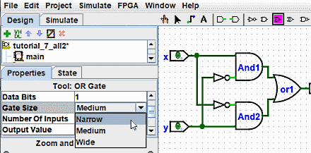
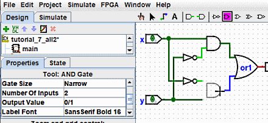
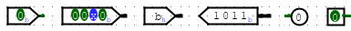

工具和组件的属性
每个用于向电路添加组件的工具都有一组属性，这些属性会被赋予工具创建的组件；之后可以更改组件自身的属性，而不会影响工具的属性。选择一个工具时，Logisim 会更新属性表以显示该工具的属性。
例如，假设我们想要创建更小的与门。目前，每次选择与门工具时，它都会创建一个大的与门。但如果在选择工具后（在将该与门放置到电路之前）编辑门大小属性，我们将更改该工具的属性，这样后续使用该工具添加的与门将变为窄型。

现在，可以删除现有的两个与门，并在其位置添加两个新的与门。这次它们将是窄型的。（如果选择将输入数量减少到 3，与门左侧将不会有垂直延伸。但还需要重新布线，使导线恰好连接到与门的左侧。）

对于某些工具，工具的图标会反映部分属性的值。其中一个例子是引脚工具，其图标朝向与其朝向属性所指示的方向相同。
工具栏中的每个工具都与资源管理器窗格中的对应工具有不同的属性集。因此，即使将工具栏的与门工具更改为创建窄型与门，门库中的与门工具仍会创建宽型与门，除非也更改其属性。
实际上，默认工具栏中的输入引脚和输出引脚工具都是线路库中引脚工具的实例，但属性集不同。引脚工具的图标会根据其类型属性绘制为圆形或方形。

Logisim 提供了一个方便的快捷键来更改许多组件的朝向：选中相应工具后按一个方向键，即可自动更改后续放置组件的方向。
下一节： 用户指南。